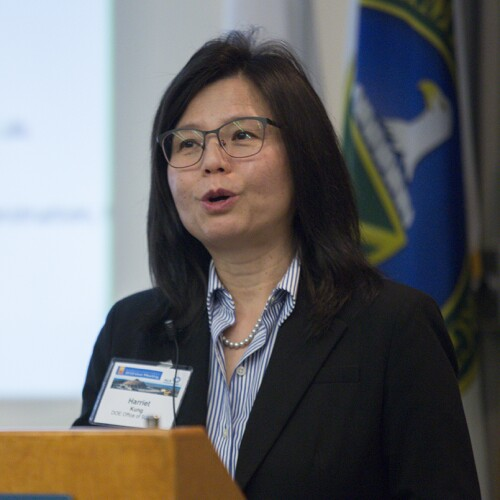

AASF Annual Meeting
Asian American Scholar Forum Roundtables with Policymakers
Sunday, July 28, 2024
Location: TBD at Stanford
Keynote Speakers
| Nisha
Ramachandran Executive Director, CAPAC |
Kei Koizumi
White House OSTP Principal Deputy Director |
Panelists
| Margaret Lewis Professor at Seton Hall Law School |
Brian
Sun AASF Legal Advisory Member, Partner at Norton Fulbright, LLC |
Daniel
Tilley Legal Director at ACLU Florida |
John
C. Yang President & Executive Director of Asian Americans |
 |
 | ||
| Rebecca
Keiser Chief of Research Security Strategy and Policy, NSF |
Harriet
Kung Deputy Director for Science Programs, DOE |
Bindu
Nair Director of Basic Research Office, DOD |
Larry A.
Tabak Principal Deputy Director, NIH |
Schedule
| 8:30-8:45 | Opening Remarks | Congressional representatives and AASF leadership |
| 8:45 - 10:00 | Crack Down on Asian Immigrants - Stories on The Ground, Know Your Rights & Legal Perspectives | Keynote: Nisha Ramachandran, Executive Director, CAPAC Panel discussion moderated by Margaret Lewis, Professor at Seton Hall Law School
|
| 10:00 - 10:15 | Break | |
| 10:15 - 11:30 | White House & Government - How To Attract Talents & Make U.S. Competitive | Keynote: Kei Koizumi, White House OSTP Principal Deputy Director (Confirmed) Panel discussion moderated by: Gisela P. Kusakawa, Executive Director of AASF
|
| 11:30 - 13:15 | Social lunch | Keynote: Fireside chat with leading experts on US-China relations and the impact on science and
technology in America Interviewer: President Yasheng Huang |
| 13:30 - 17:00 | AASF annual meeting & strategy session |